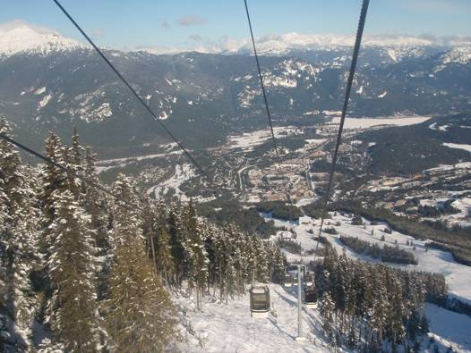

<header class="hero">
    <p class="date">Feb 13, 2009</p>
    <h1>Day 2: ケロウナの雪山と相棒のJeep</h1>
</header>
<main class="content-section">
    <article class="journal-block">
        <div class="text-block">ケロウナを出発し、一路スカミッシュへ。本格的な冬のカナダを、Jeepが力強く突き進む。</div>
        <div class="image-container"></div>
        <div class="text-block">途中の湖畔にて。静寂の中に佇む相棒。4WDの安心感が頼もしい。</div>
        <div class="image-container"></div>
    </article>
    <div class="navigation-links">
        <a href="day1.html" class="btn btn-back"><i class="fas fa-chevron-left"></i> Day 1</a>
        <a href="day3.html" class="btn btn-next">Day 3へ <i class="fas fa-chevron-right"></i></a>
    </div>
</main>
